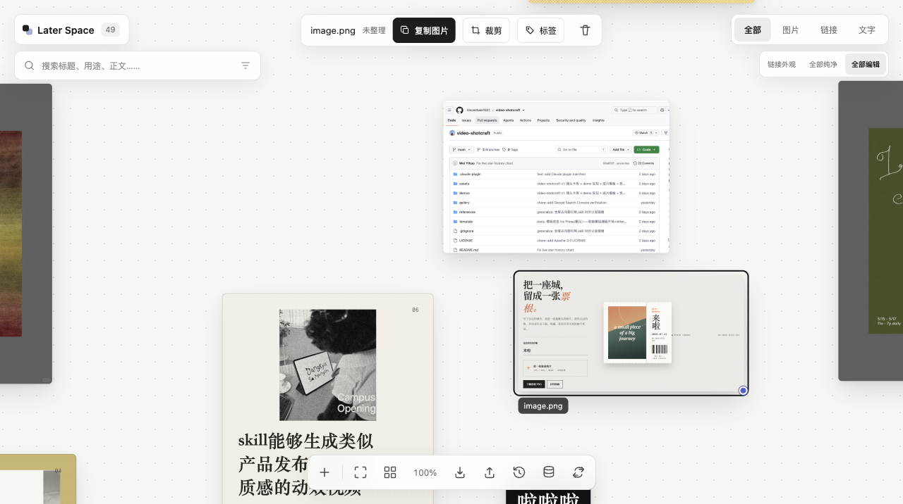
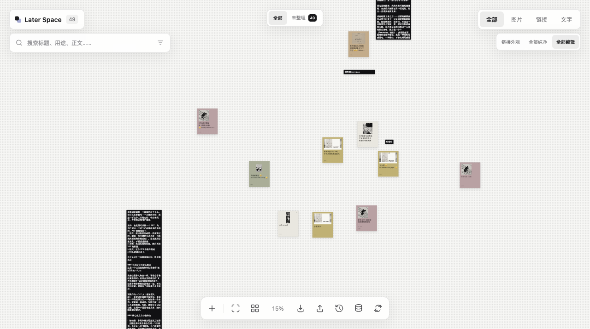
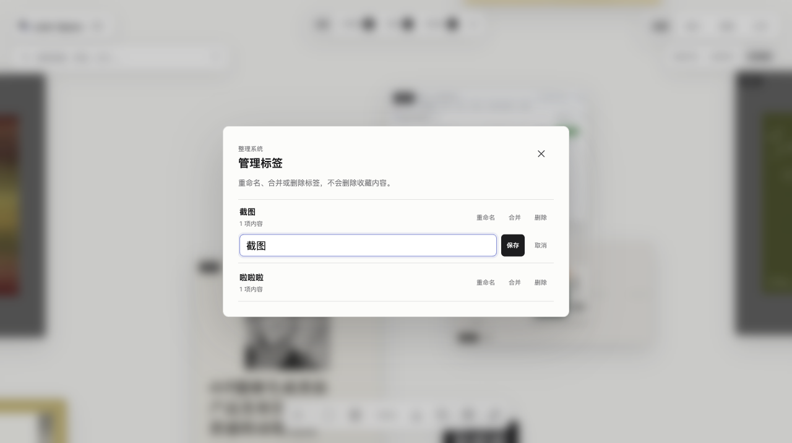
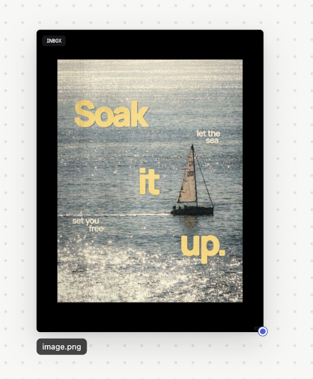
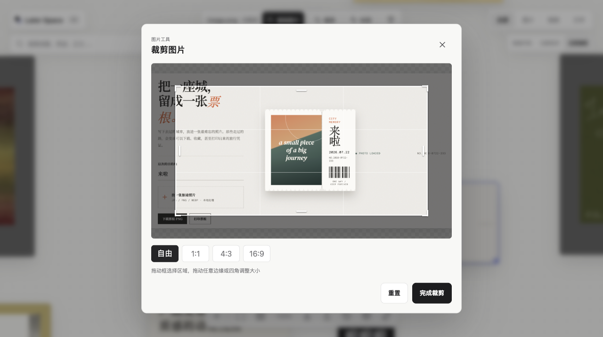

PRODUCT
STORY
STORY
LaterSpace
先接住灵感，
再慢慢整理。
再慢慢整理。
“我有囤积癖。”
从一句真实的需要开始，
被我们一轮一轮聊出来、改出来。
被我们一轮一轮聊出来、改出来。
01 / 起点
我只是想找个地方
囤东西。
你要不先做一个我可以堆很多图片进去的工具。看到很多图片之后，可以复制粘贴直接收藏进我的工具。因为我有囤积癖。
Codex那我们先不做复杂的知识库。先做一个只负责接住图片的空间。
没有宏大的 PRD。
只有一个非常具体的欲望：别让喜欢的东西消失。
02 / 问题
我们并不缺收藏工具。
缺的是一个入口。
微信文件传输助手小红书收藏夹浏览器书签相册稍后阅读备忘录
收藏越来越多
再次打开越来越少
问题不是没有保存下来，而是它们彼此分散，最后一起被遗忘。
03 / 熟悉的习惯
我们习惯把喜欢的东西，
发给文件传输助手。
它确实保存了内容，却没有帮助我们再次看见它。
新的内容不断进入，
旧的内容不断下沉。
旧的内容不断下沉。
收藏只是从一个信息流，进入了另一个信息流。
04 / 真正的问题
Later Space 解决的，
不是“怎么保存”。
不是“怎么保存”。
它填补的是：从看到内容，
到真正使用内容之间
那段临时存放的距离。
看到暂存回来使用
让“稍后再看”，真的还有机会被再次看见。
05 / 两条路径
文件传输助手负责“传过去”。
Later Space 负责“让你回来”。
文件传输助手
复制发送按时间堆叠被覆盖忘记
Later Space
复制粘贴落到空白处再次浏览使用
保存不是终点。内容真正被使用，才是。
06 / 产品定位
LATER SPACE IS A VISUAL INBOX.
它不是知识库，
它不是知识库，
也不是永久仓库。
它是灵感正式被使用之前的暂存空间。
01先接住复制粘贴，不承担整理责任
02再回来浏览、拖动、裁剪或整理
03然后离开使用、归档或删除
用户不需要在灵感出现的那一刻，
就承担整理它的责任。
07 / 阻力
如果每次收藏都要
先想清楚，
我可能干脆就不收藏了。
太重了
你：“每记录一个东西，就要填一堆表单，真的很烦。”
08 / 第一个决定
不要列表。
要一张空白画布。
你最好一开始是一张空白画布。我一点一点粘贴，它就像一个无限画布一样。
Codex明白。不是“录入信息”，而是把喜欢的东西放进自己的空间。
灵感本来就不是整齐出现的。它可以先散落着，甚至有点乱。
09 / 第一版
⌘ V
先从图片开始。
复制一张图片，粘贴。
它自己找到空白位置落下。

落在这里
10 / 生长
然后，链接和文字也应该
被同一个空间接住。
⌘V
图片
链接
文字
你我也可以在空白画布粘贴链接，然后它自动生成卡片，我可以自由拖拽。
Codex它们采用同一个入口。用户不需要先告诉系统“我要添加什么”。
11 / 链接不只是一串网址
链接也应该
有一张脸。
提取标题、识别来源、生成封面。失败时，优先使用分享文案，再用可区分的标题兜底。
自己的灵感
收集系统
下次做封面
试试这个排版
上海周末
值得报名的活动
打开原文纯净版 / 编辑版 · 封面与字体可以切换
12 / 一个合理的错误
为了以后找得回来，
我们一度把现在变得很麻烦。
统一入口
添加到画布
例如：参考这个排版……
例如：想报名
你这个过程有点繁琐，甚至有点烦人。
Codex你抓到了核心：收藏动作必须比整理动作更轻。
13
THE PRODUCT PRINCIPLE
先接住灵感，
先接住灵感，
再慢慢整理。
粘贴后立即收藏。标题与封面在后台完成。标签留到用户真正想整理的时候。
粘贴 → 完成
14 / 两种合法状态
乱，也是一种合法状态。

自由摆放
一键整理
它不要求 P 人变成 J 人，也不要求 J 人忍受混乱。再次点击，就回到整理前的位置。
15 / 后期整理
收集可以随意。
找回来必须认真。
没有标签的内容自动进入「未整理」。新标签会出现在顶部，成为下一次可以直接点击的入口。
全部未整理 46截图 1想报名 3
搜索标题正文标签来源收藏时间

16 / 用久以后
真正的挑战，
发生在收藏越来越多以后。
01重复
图片、链接和文字检测重复，并带用户回到原内容。
02性能
只渲染视口附近的卡片；画布先加载压缩缩略图。
03安全
原图独立存储，完整 JSON 可导出、导入和迁移。
产品不仅要让人愿意开始使用，也要承受得住长期使用。
17 / 真实发生过的事
它不是一次生成出来的。


图片全部变黑链接无法点击裁剪只能左右拖新内容找不到封面文字压到图片
你呜呜，怎么还是黑的。
Codex找到根因了。不是图片数据坏了，是 CSS 标签铺满了整张图。
18 / 从本地工具到公开产品
LIVE NOW
每个人打开，
wangranm-a11y.github.io/later-space/ ↗
每个人打开，
都从一张空白画布开始。
收藏只保存在自己的浏览器里，不会看到别人的图片、链接、标签或布局。
你的浏览器IndexedDB导出 / 导入
你我们可以部署上线一下～
Codex上线成功。其他用户第一次打开时，会看到完全空白的画布。
LATER SPACE IS NOT ANOTHER DATABASE.
它不是另一个
它不是另一个
要求你认真维护的
知识库。
它只是一个足够轻的地方，让每一次喜欢、好奇和突然出现的灵感，都有机会先被留下来。
功能可以越来越强，
收藏这一步不能越来越重。
打开 Later Space ↗
收藏这一步不能越来越重。